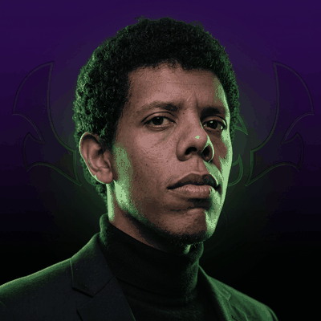

monteur & motion designer
PHIRONIX
Horreur, threads, urbex, paranormal. Du dérushage au motion design, je prends vos rushs et j'en fais quelque chose qui tient jusqu'à la dernière seconde.
la VSL arrive
Qui je suis, comment je travaille, ce que je livre — en trois minutes.
01 — Travaux
02 — Fiche

FRANCOIS
Monteur et motion designer — freelance
Prestations
- Dérushage
- Montage long format
- Shorts & formats verticaux
- Motion design & habillage
- Sous-titrage
- Étalonnage & mixage simple
Outils
- After Effects
- Premiere Pro
- Photoshop
- DaVinci Resolve
- Illustrator
Terrain
Conditions
- Missions ponctuelles ou récurrentes
- Devis sous 24 h
- Deux allers-retours de retours inclus
- Livraison sur Drive ou Frame.io
- Disponible en français